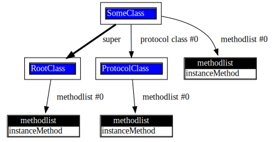
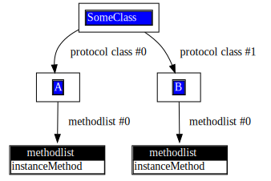

Protocolclass
Syntax topic
@protocol SomeProtocolClass
@end
@interface SomeProtocolClass <SomeProtocolClass>
@end
@interface SomeClass < SomeProtocolClass>
@end
protocolclass
A protocolclass is a rootclass that implements a protocol of the same
name. The methods declared as @optional will be defined by the protocolclass,
for reuse by protocol adopting classes:
@interface RootClass
- (void) instanceMethod;
@end
@implementation RootClass
- (void) instanceMethod
{
printf( "%s\n", __FUNCTION__);
}
@end
@protocol ProtocolClass
@optional
- (void) instanceMethod;
@end
@interface ProtocolClass < ProtocolClass>
@end
@implementation ProtocolClass
- (void) instanceMethod
{
IMP imp;
printf( "%s\n", __FUNCTION__);
// can't call super
imp = MulleObjCOverriddenIMP;
if( imp)
MulleObjCIMPCall0( imp, self, _cmd);
}
@end
@interface SomeClass : RootClass < ProtocolClass>
@end
@implementation SomeClass
- (void) instanceMethod
{
printf( "%s\n", __FUNCTION__);
[super instanceMethod];
}
@end
This turns out to be akin to multiple inheritance.

When you run [instance instanceMethod] the output will be:
-[SomeClass instanceMethod]
-[ProtocolClass instanceMethod]
-[RootClass instanceMethod]
The protocolclass “wedged” itself between the superclass and the adopting class.. The super call actually reached the protocolclass method, not the superclass method.
Interestingly, adding protocolclasses to a rootclass is
possible, but the compiler will not allow you to call super in the adopting
rootclass. A protocolclass will not want to call super as it has no idea what the
superclass of the protocol adopting class is. Nevertheless, mulle-objc does not stand in
the way of a good hack, so you can reach the superclass method with
MulleObjCOverriddenIMP, if so desired.
What is obviously missing is the possibility to add instance variables.There are other solutions for this, but that is a topic for another pamphlet.
The order of protocolclasses is important
Like the methodlists of a class, the search order of protocolclasses is back to front:
@protocol A
@optional
- (void) instanceMethod;
@end
@interface A < A>
@end
@implementation A
- (void) instanceMethod
{
IMP imp;
printf( "%s\n", __FUNCTION__);
imp = MulleObjCOverriddenIMP;
if( imp)
MulleObjCIMPCall0( imp, self, _cmd);
}
@end
@protocol B
@optional
- (void) instanceMethod;
@end
@interface B < B>
@end
@implementation B
- (void) instanceMethod
{
IMP imp;
printf( "%s\n", __FUNCTION__);
imp = MulleObjCOverriddenIMP;
if( imp)
MulleObjCIMPCall0( imp, self, _cmd);
}
@end
@interface SomeClass < A, B>
@end
@implementation SomeClass
@end
This produces a class hierarchy:

When you run [obj instanceMethod] on a “SomeClass” instance, “B” will be
found first. So the output is:
-[B instanceMethod]
-[A instanceMethod]
API
| Function/Name | Description |
|---|---|
_PROTOCOLCLASS_INTERFACE0 |
Define protocol class without protocols |
PROTOCOLCLASS_INTERFACE0 |
Define protocol class with NSObject protocol |
_PROTOCOLCLASS_INTERFACE |
Define protocol class with custom protocols |
PROTOCOLCLASS_INTERFACE |
Define protocol class with NSObject and custom protocols |
PROTOCOLCLASS_END |
End protocol class definition |
PROTOCOLCLASS_IMPLEMENTATION |
Begin protocol class implementation |
MulleObjCOverriddenIMP |
Get overridden implementation in protocol class chain |
MulleObjCClobberedIMP |
Get clobbered implementation (stops at class boundary) |